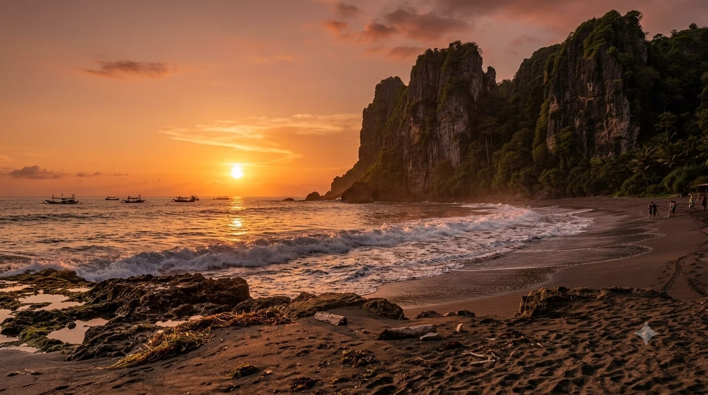
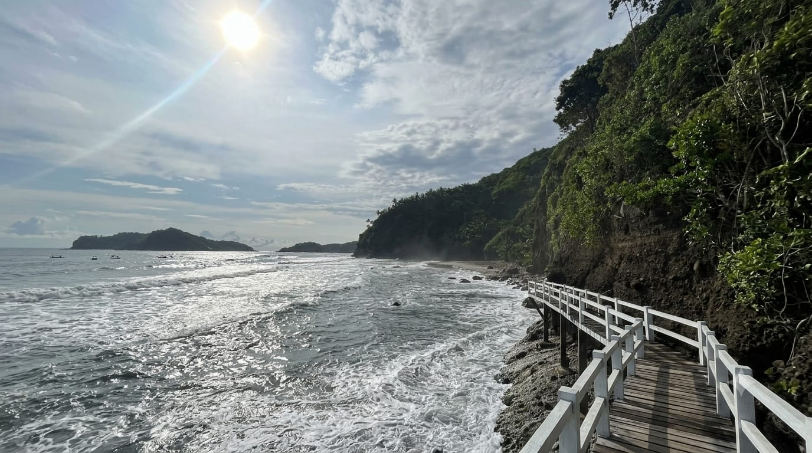
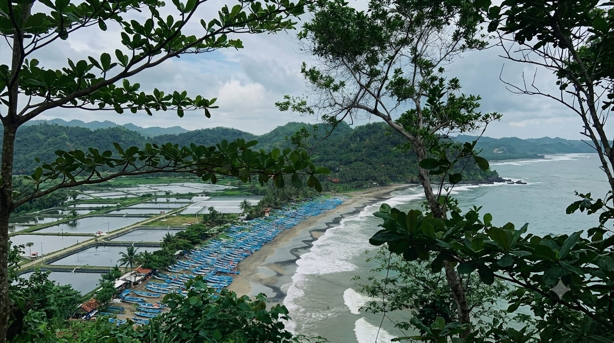

Menikmati Surumanis
Surumanis paling menarik ketika dinikmati tanpa agenda yang terlalu padat.
Beberapa cara menikmati Surumanis
Berjalan, berhenti, melihat laut, lalu memberi waktu pada perjalanan untuk berjalan lebih pelan.

Menjelang Sore di Gardu Pandang
Menjelang sore, cahaya berubah perlahan di atas laut. Titik pandang di bukit memberi ruang untuk menikmati perubahan itu dari ketinggian.

Berjalan di Pesisir
Ikuti jalur menuju pesisir untuk melihat tebing, vegetasi, batu, dan garis pantai dari jarak yang lebih dekat.
Mencari Sudut Foto
Gunakan bentuk tebing, karang, dan garis horizon sebagai bingkai alami; tidak perlu banyak elemen tambahan.
Relaksasi Bukit & Suasana Alami
Sediakan waktu untuk duduk, melihat laut, dan menikmati jeda tanpa mengejar terlalu banyak aktivitas.
Bermalam di Area Kemah
Camping dapat menjadi pilihan untuk tinggal lebih lama; ketersediaan area dan ketentuan perlu dikonfirmasi kepada pengelola.

DATANG, LALU RASAKAN RITMENYA.
“Dari bukit, laut terasa luas. Dari pesisir, tebing terasa dekat.”
Desa Pasir, Kecamatan Ayah, Kebumen.
Sudah menentukan rencana? Pastikan informasi praktisnya.
Tiket, akses, dan fasilitas ada di sini.